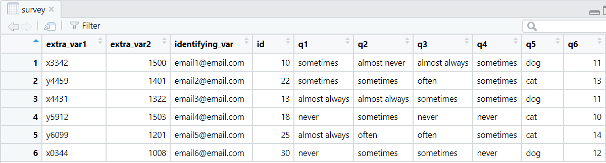
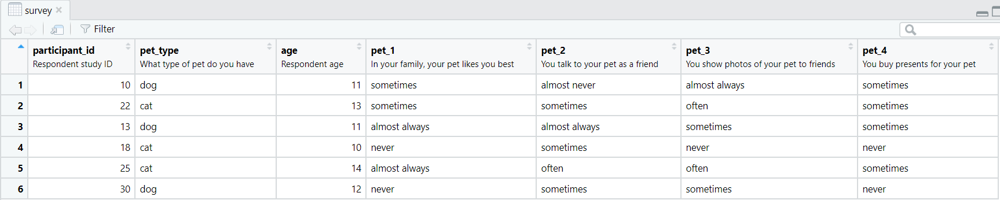

Four simple ways to integrate your data dictionary into your data cleaning process
By Crystal Lewis in tutorials
November 27, 2022
In an earlier blog post I argued that data dictionaries are one of the most important pieces of documentation you can keep for a project and I spoke about the four purposes of a data dictionary. One of those purposes being that they can be integrated in your data cleaning process. And when I say “integrated”, I mean that in both a non-literal sense (for example I can refer to my data dictionary for guidance as to what transformations my data might need), but I also mean it in a very literal sense. You can actually integrate your data dictionary into your cleaning script and use it in functions.
Four ways to integrate your data dictionary into your cleaning process
This blog post will cover four simple ways to integrate your data dictionary into your data cleaning process. There are probably many other, more clever ways to integrate your data dictionary, and if you have other ideas, I would love to hear them! But for now, these are the ways I currently use my data dictionary in my data cleaning process.
- To drop variables
- To rename variables
- To relocate variables
- To embed variable labels (metadata)
And why would we want to use our data dictionary to automate these four processes?
-
It’s faster. Imagine if you have to rename 40 variables. Would you rather write out all 40 new names in a naming function or use your data dictionary to do the renaming for you?
-
It’s more reproducible. How many times have you chosen a name for a variable and then later decided that was a bad name and wanted to rename it again? That is totally okay, but now you not only have to rename it in your data cleaning syntax, you ALSO have to rename it in your data dictionary. 😟 But if you use your data dictionary to rename your variables, you only have to update in one location!
-
It reduces errors. We are all human and we create typos. Reducing the amount of times we have to type out variable names or write variable labels reduces the amount of errors we may introduce into our data.
Before we dive into these four use cases, let’s take a look at our example data and data dictionary.
Our data
For this example we are using items from a pet survey I found online, populated with fictitious data.

Our data dictionary
Along with our data, I also have a data dictionary that provides a glimpse into what I expect our final clean dataset to look like. The four columns in my data dictionary tell me what the variable names are currently in my raw data, how I plan to rename the variables, the labels corresponding to those variables, and the values corresponding to those variable. Normally I would have additional columns, such as variable type, but I kept this dictionary very small for simplicity.
| new_name | old_name | label | value |
|---|---|---|---|
| drop | extra_var1 | Identifier provided by survey platform | NA |
| drop | extra_var2 | Survey time provided by survey platform | NA |
| drop | identifying_var | Respondent email | NA |
| participant_id | id | Respondent study ID | 1-100 |
| pet_type | q5 | What type of pet do you have | dog, cat |
| age | q6 | Respondent age | 10-18 |
| pet_1 | q1 | In your family, your pet likes you best | almost always, often, sometimes, almost never |
| pet_2 | q2 | You talk to your pet as a friend | almost always, often, sometimes, almost never |
| pet_3 | q3 | You show photos of your pet to friends | almost always, often, sometimes, almost never |
| pet_4 | q4 | You buy presents for your pet | almost always, often, sometimes, almost never |
Now that we know what our raw data looks like, and we have our data dictionary to guide us, we can begin to make our transformations.
Let’s first call the packages we need, and read in our data and our data dictionary.
library(readxl)
library(tidyverse)
library(labelled)
survey <- read_csv("survey_raw.csv")
dict <- read_excel("data-dictionary.xlsx")
1. Drop variables
There are many reasons you may want to drop variables from your raw data. One could be that you need to remove PII (personally identifiable information), such as name or email. Another reason might be that your data collection platform adds additional metadata to your export that is irrelevant to your research study, such as duration or date. In our scenario, I would like to remove extra_var1 and extra_var2, as well as identifying_var. I know that I want to remove these columns because within my data dictionary, I have named all of these variables “drop” in my new_name column.
Typically in order to drop variables I would list all of the variables I want to remove or keep in a dplyr::select() statement. But now we can use our data dictionary to drop/keep variables for us.
We first create a character vector of all variables we wish to drop using our data dictionary.
drop_vars <- dict %>%
filter(new_name == "drop") %>%
pull(old_name)
And then use this vector in our select statement. We use all_of() to denote that we are using an external vector.
survey <- survey %>%
select(-all_of(drop_vars))
2. Rename variables
In this scenario our data has come to us with very vague variable names and we want to name them something more identifiable. Again, I would normally rename my variables manually using something like purrr::set_names() or dplyr::rename(). However, now we can use our data dictionary in these functions, removing the need to manually type all of these names.
We first need to create a named character vector of our variable names using our data dictionary. It is important that the new variable names are selected first and the old variable names are selected second in this process.
dict_names <- dict %>%
select(new_name, old_name) %>%
filter(!new_name == "drop") %>%
deframe()
We can then rename all variables using that named character vector.
survey <- survey %>%
rename(all_of(dict_names))
3. Reorder variables
It can be really nice for your data to be in the same variable order as your data dictionary. It makes reviewing the two products together much clearer. Currently our variables are not in the same order as our data dictionary.
In order to reorder our variables using our data dictionary we again create a character vector of our variables (which are currently in the correct order in our data dictionary).
var_order <- dict %>%
filter(!new_name == "drop") %>%
pull(new_name)
And then use this vector to reorder our variables.
survey <- survey %>%
relocate(all_of(var_order))
4. Embed variable labels
Embedding metadata in your data in the form of variable labels is not always a necessary part of data cleaning but it be a very helpful step. Without ever having to open your data dictionary, embedded metadata such as variable labels allows you to better understand the meaning of the columns in your data. In her blog post about labelled data, Shannon Pileggi talks about additional benefits of working with labelled data, such as using metadata within data products such as tables or figures.
There are many ways to add metadata in R, but I am personally a big fan of using the labelled package. As someone who often works with education researchers who work with data in programs such as SPSS and SAS, the labelled package and the way it assigns metadata, integrates well with other programs outside of R.
The labelled::set_variable_labels() function works with lists so we first create a named list of our variable labels using our data dictionary.
dict_labels <- dict %>%
select(new_name, label) %>%
deframe() %>%
as.list()
We then can use this list to apply labels to our variables. We can add the argument .strict = FALSE to denote that it is okay if there are more variables in our data dictionary than are represented in our data.
survey <- survey %>%
set_variable_labels(.labels = dict_labels, .strict = FALSE)
Review our data
Now that we have done 4 transformations to our data using our data dictionary, we can view our final dataset.

- Posted on:
- November 27, 2022
- Length:
- 7 minute read, 1310 words
- Categories:
- tutorials
- Tags:
- rstats data cleaning documentation